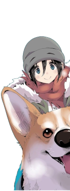
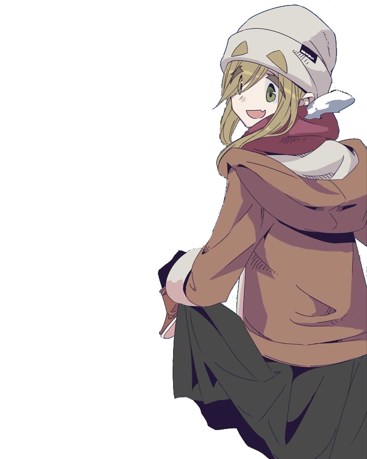
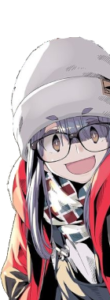
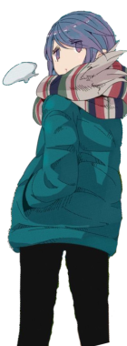
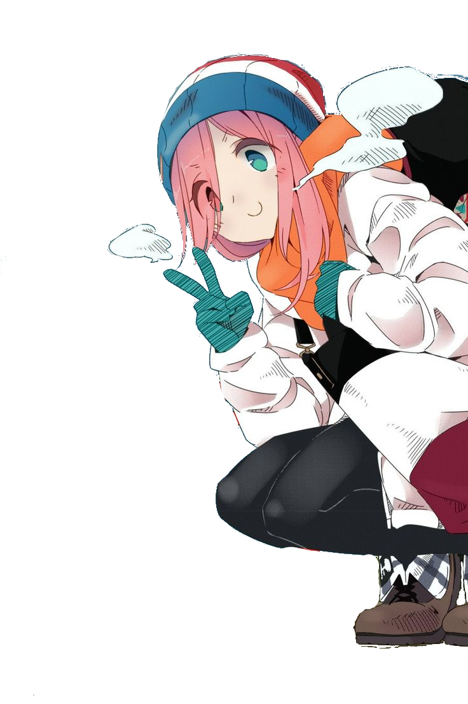

Ena Saitou
Amiga animada e extrovertida, cujo entusiasmo contagia o grupo, adicionando momentos divertidos e descontraídos durante as jornadas de acampamento.
Citação
"Não importa o quão difícil seja a trilha, a risada é a melhor companheira de viagem!"
Comida Favorita
Ramen
Acampamento Favorito
Praia com vista para o pôr do sol
Hobbies
- Jogos de tabuleiro ao ar livre
- Contar histórias de terror à noite
- Fazer marshmallows na fogueira

Aoi Inuyama
Responsável e amigável, age como uma figura irmã para as outras, proporcionando suporte emocional e praticidade durante as aventuras ao ar livre.
Citação
"Amizade é como uma fogueira: é preciso cuidar dela para não se apagar."
Comida Favorita
Bento caseiro
Acampamento Favorito
Bosque com trilhas para caminhada
Hobbies
- Planejar itinerários de acampamento
- Ler mapas e orientação ao ar livre
- Praticar técnicas de sobrevivência

Chiaki Oogaki
Brincalhona e amante de comida, traz bom humor e energia positiva, contribuindo para uma atmosfera leve e amigável no grupo.
Citação
"A vida é como um prato de macarrão - melhor aproveitar antes que esfrie!"
Comida Favorita
Takoyaki
Acampamento Favorito
Floresta com riacho
Hobbies
- Cozinhar pratos novos no acampamento
- Jogar jogos de palavras
- Organizar festas surpresa

Citação
"Às vezes, a melhor companhia é o próprio silêncio da natureza."
Comida Favorita
Sopa de Missô
Acampamento Favorito
Cume de uma montanha isolada
Hobbies
- Observação de estrelas
- Leitura de livros ao ar livre
- Meditação na natureza

Citação
"Eu amo a sensação de acampar sozinha. É como se eu estivesse envolta em uma capa de tranquilidade."
Comida Favorita
Curry
Acampamento Favorito
Às margens do Lago Motosu
Hobbies
- Fotografia ao ar livre
- Experimentar novas receitas de acampamento
- Coletar lenha para fogueiras